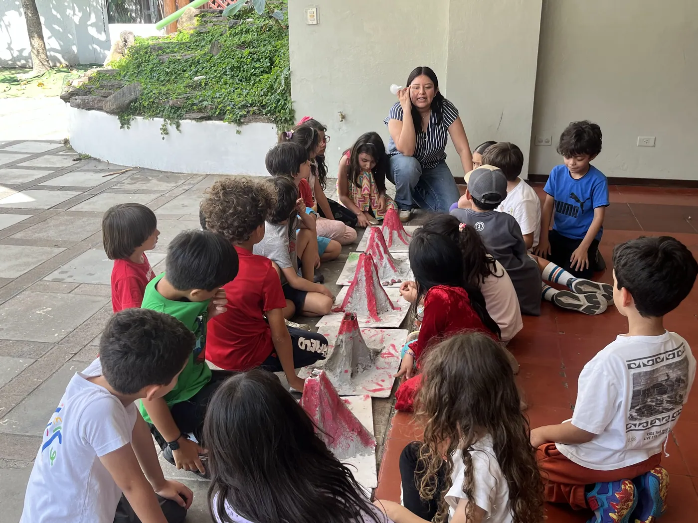

Testimonios de padres y estudiantes
Las familias que ya decidieron, en sus propias palabras.
Elegir colegio en El Salvador no es solo una decisión académica, también es social. Así que aquí están los padres. Algunos en inglés, la mayoría en español, y varios de ellos gente que usted quizá ya conoce.
Queríamos un colegio donde nuestros hijos fueran vistos y respetados como individuos únicos. En Acton no se les pide encajar, se les anima a crecer siendo ellos mismos.
Acton Academy ha sido la mejor decisión para nuestro hijo. Aquí está floreciendo.
Lo recomiendo de corazón a cualquier familia. No podría estar más contenta con nuestra experiencia. Mis hijos han crecido muchísimo gracias a Acton Academy y se han vuelto jóvenes responsables, considerados y empáticos. También aprendieron a apoyar y respetar las opiniones de los demás, incluso cuando no están de acuerdo, y a comunicarse con madurez y amabilidad. Me siento orgullosa y agradecida de ser parte de esta comunidad.
Llegamos a Acton con nuestra hija de tres años. De las cosas que más me sorprendió fue que, para el proceso de admisión, nos dieron un libro para leer antes de cualquier visita o entrevista. Lo leímos y lo discutimos en familia. Y luego nos hicieron una entrevista a nosotros, para conocer nuestra dinámica familiar y nuestras expectativas como padres.

Pregúntele a cualquiera de ellas. De eso se trata esta página.
En video
Cinco familias y estudiantes, frente a la cámara.
Debajo de cada uno está lo que dicen, por escrito, para que pueda leerlo sin sonido y para que los buscadores y los asistentes de inteligencia artificial también lo puedan leer.
En un sistema que no tiene tareas, me encuentro con una hija que se quiere levantar más temprano para terminar de leer el libro, porque su meta era alcanzar cierto número de lecturas en la semana y ella quiere lograr su propia meta. Acton ha desafiado mis propios paradigmas sobre lo que es educar, y yo fui formada en el marco tradicional.
Es un colegio donde puedes escoger qué hacer, y nadie te presiona. Si fallas en algo, en vez de regañarte, te motivan a levantarte y seguir adelante. Escogí Acton por toda la libertad que me da, y porque nos da la oportunidad de perseguir la carrera que queremos y de experimentar cosas del mundo real.
Acton ha superado por completo todas nuestras expectativas. Nos cambiamos de un programa escolar convencional al programa Montessori y estamos encantados con Shannon y con todo el equipo de guías de Acton. Lo recomiendo muchísimo a todos nuestros amigos y familiares.
Hemos podido ver crecer su confianza. Venir a estas exhibiciones y escucharlo hablar de todo lo que aprende cada sesión ha sido una delicia. En la primera estaba nervioso, y cada vez que viene tiene más confianza y realmente puede mostrar sus habilidades de liderazgo.
El respeto a su propia individualidad, respetar su ritmo, respetar su gusto. No es que no haya cosas que se van a hacer, pero nunca se sienten impuestas.
Venga a ver si tienen razón.
Visite el campus, conozca a los estudiantes y deje que su hijo pase una semana con nosotros.